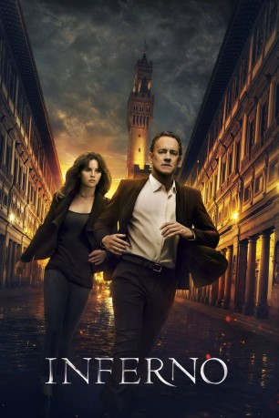

#5366 Inferno
 gesehen am 13.02.2017
gesehen am 13.02.2017
 
 IMDB-Wertung: 6.2 / 10
IMDB-Wertung: 6.2 / 10  Tomatometer: 23
Tomatometer: 23  Metascore: 0
Metascore: 0 
INFERNO setzt die Leinwandabenteuer des berühmten Harvard-Symbologen fort: Robert Langdonwird darin mit einer Reihe von Hinweisen konfrontiert, die mit Dantes "Inferno" zusammenhängen. Nachdem er in einem italienischen Krankenhaus mit Amnesie erwacht ist, tut er sich mit der jungen Ärztin Sienna Brooks zusammen, weil er hofft, dass sie ihm dabei helfen kann, seine Erinnerung wiederzuerlangen. Gemeinsam hetzen sie in einem Wettlauf gegen die Zeit durch ganz Europa, um eine tödliche globale Bedrohung abzuwenden.
Jahr: 2016
Dauer: 121 Minuten
FSK: 12
Land: USA Studio: Columbia PicturesTonspuren: DTS - ,
Untertitel: Deutsch, Englisch,
Auflösung: 1080p (1920x1040) Größe: 9932 MB
Genre: Action, Thriller, Drama, Abenteuer, Krimi, Mystery
Regisseur:  Ron Howard
Ron Howard
Drehbuch: David Ayer
Soundtrack:
Darsteller:
 Tom Hanks als Robert Langdon
Tom Hanks als Robert Langdon Felicity Jones als Sienna Brooks
Felicity Jones als Sienna Brooks Omar Sy als Christoph Bouchard
Omar Sy als Christoph Bouchard Irrfan Khan als Harry Sims
Irrfan Khan als Harry Sims Sidse Babett Knudsen als Elizabeth Sinskey
Sidse Babett Knudsen als Elizabeth Sinskey Ben Foster als Bertrand Zobrist
Ben Foster als Bertrand Zobrist Ana Ularu als Vayentha
Ana Ularu als Vayentha- Ida Darvish als Marta Alvarez
- Fausto Maria Sciarappa als Parker
 Paul Ritter als CRC Tech Arbogast
Paul Ritter als CRC Tech Arbogast- Vincenzo Tanassi als Boboli Gardens Policeman
- Alessandro Fabrizi als Gallery Guard
- Simone Mariani als Security Director
- Jon Donahue als Richard
- Fortunato Cerlino als Entrance Museum Guard
 Attila Árpa als Local CRC Agent
Attila Árpa als Local CRC Agent- Kata Sarbó als Gate Keeper
- Francesca Inaudi als Venice Museum Guide
 Philip Arditti als Professor, Istanbul
Philip Arditti als Professor, Istanbul- Luca Fiorilli als Video Technician
- Christian Stelluti als Bouchard Agent
 Mirjam Novak als CRC Tech
Mirjam Novak als CRC Tech Peter Schueller als Concert Patron
Peter Schueller als Concert Patron- Felipe Torres Urso als Concert Patron
- Mario Acampa als Death Mask Hall Guard
- Xavier Laurent als Bouchard French Agent
 Peter Linka als WHO Cistern Agent
Peter Linka als WHO Cistern Agent- Martin Angerbauer als CDC Worker , uncredited
 Björn Freiberg als Business Traveller , uncredited
Björn Freiberg als Business Traveller , uncredited- James Fred Harkins Jr. als Sinskey's Aide , uncredited
 Slim Khezri als Agent , uncredited
Slim Khezri als Agent , uncredited Wolfgang Stegemann als Bouchard Agent , uncredited
Wolfgang Stegemann als Bouchard Agent , uncredited- Paolo Antonio Simioni als Dr. Marconi
- Alessandro Grimaldi als Florence Hospital Taxi Driver
- Robin Mugnaini als Apartment Carabinieri Captain
- Gábor Urmai als Ignazio Busoni
- Maria Grazia Mandruzzato als Roma Merchant
- Mehmet Ergen als Mirsat
- Vincent Riotta als Death Mask Guard
- Alberto Basaluzzo als Bouchard Agent
- Gábor Nagypál als Student, Istanbul
- Gianni Annoni als Video Room Guard
- Yang Haiwen als CRC Tech
- Rebecka Sternberg als CRC Tech
- Sardar Tagirovsky als CRC Tech
- Gäbor Atlasz als Handless Beggar
- Gábor Dióssy als Handless Beggar
- Lili Gesler als Concert Patron
- Dino Conti als Death Mask Hall Guard
- Pasquale Corrente als Angry Motorist
Datei: X:\3-Trilogie(N-Z)\Robert Langdon\Inferno (2016, FSK12, 1920x1040).mkv seit 19.01.2017
Festplatte: HD Collection-3(N-Z)-6(A-Z)
 Alle Filme aus Gruppe '3-Trilogie(N-Z)\Robert Langdon'
Alle Filme aus Gruppe '3-Trilogie(N-Z)\Robert Langdon'